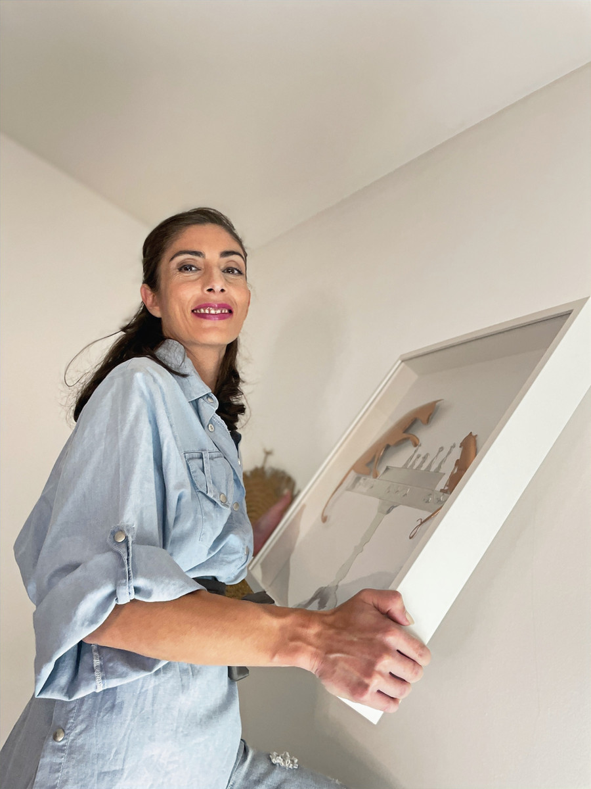

Paola Maccioni (Cagliari, 1980) vive e lavora in Veneto. Artista autodidatta, dal 2019 concentra la ricerca sull'alluminio: lastre sottili lavorate con bulini a punta tonda, senza martello né punzoni, in un processo di sbalzo in negativo basato su pressione controllata.
Il metodo è intervento lento e calibrato: il gesto non aggiunge materia ma la spinge dall'interno, generando volume attraverso la tensione del piano. La superficie diventa campo dinamico in cui variazioni minime di pressione modificano forma, profondità e percezione della luce.
«Il gesto non aggiunge materia: la spinge dall'interno.»
La pratica rilegge lo sbalzo tradizionale in chiave contemporanea, spostando l'attenzione dall'ornamento alla costruzione formale. Indaga il rapporto tra fragilità e resistenza, controllo e trasformazione, piano e volume.